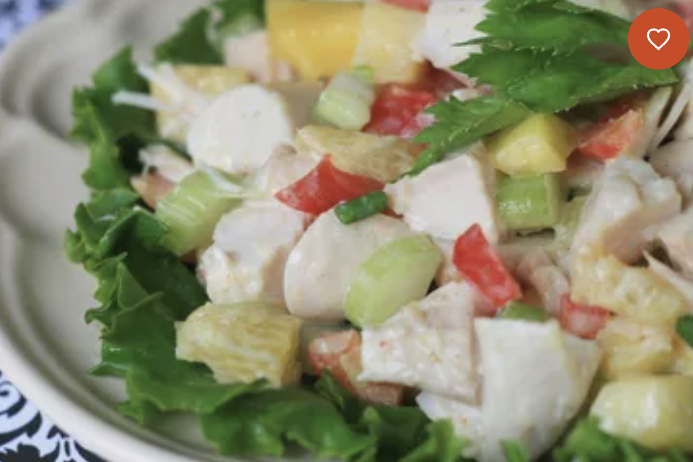

Odin Recipes

Description
This Turkey Tetrazzini recipe is the perfect way to enjoy leftover turkey. Tender turkey chunks, mushrooms
and pasta are smothered in a rich and creamy sauce and topped with cheese. Everything is baked until hot and
bubbly for a dish hearty enough to satisfy a crowd and tasty enough to get everyone excited about leftovers
like never before.
Ingredients
- 1 (16 ounce) package uncooked spaghetti
- 1/2 cup butter
- 3 cups chicken broth
- 2 cups milk
- 4 cups chopped cooked turkey
- About 1.5 cups grated Parmesan cheese
Steps
-
Preheat oven to 350 degrees F (175 degrees C). Lightly grease a baking dish.
-
Bring a large pot of lightly salted water to a boil. Add spaghetti, and cook for 8 to 10 minutes or
until al dente. Drain, and place in the prepared baking dish.
-
Melt butter in a medium saucepan over medium heat. Stir in flour. Mix in chicken broth and milk. Cook
and stir until the mixture comes to a boil. Stir in about 1 1/3 cups Parmesan cheese, and remove from
heat.
-
Mix chicken broth mixture and turkey with spaghetti. Top with remaining cheese. Bake 1 hour in the
preheated oven, until surface is lightly browned.
Return Home